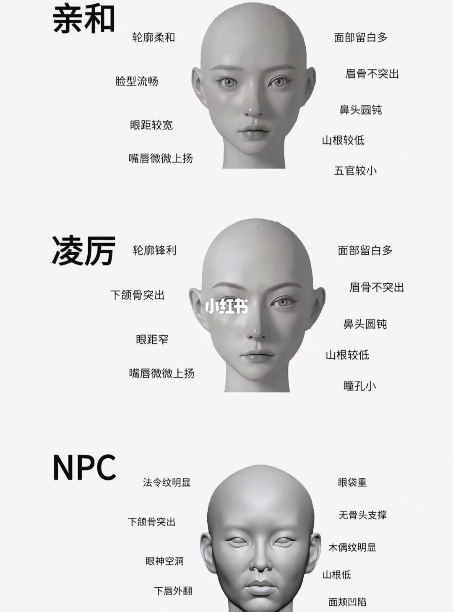
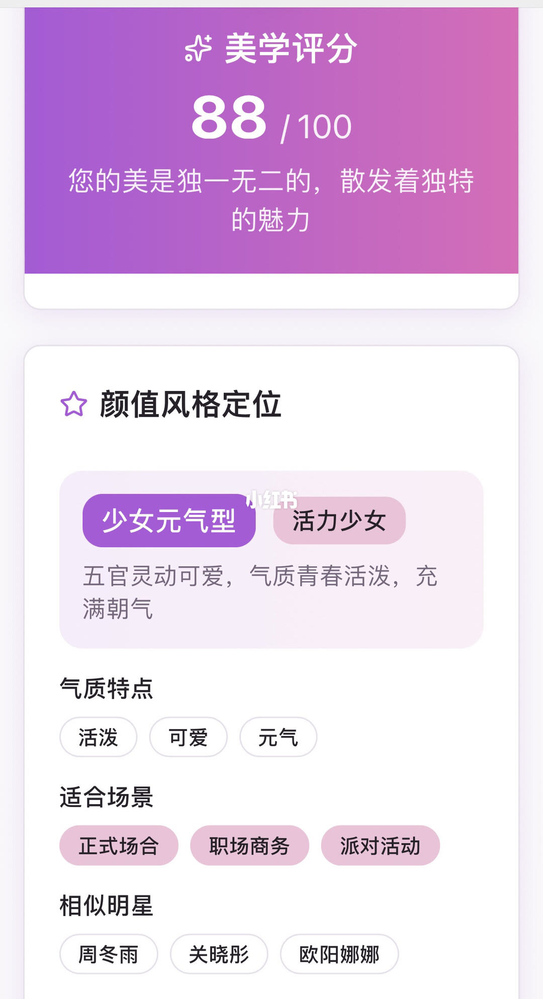
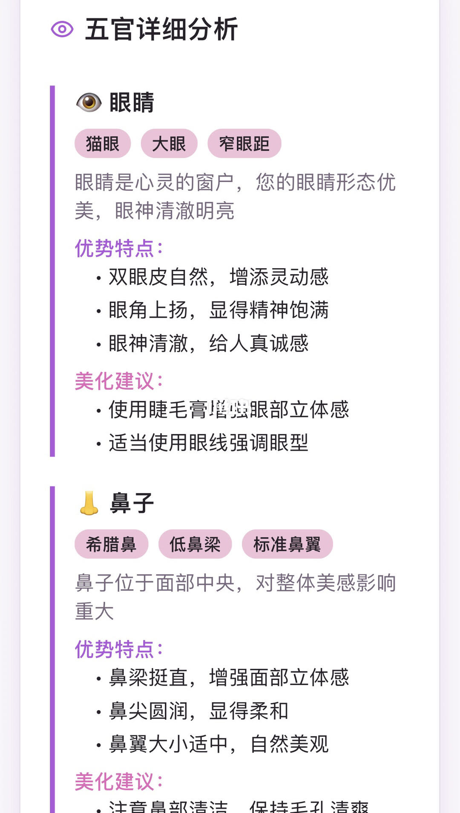
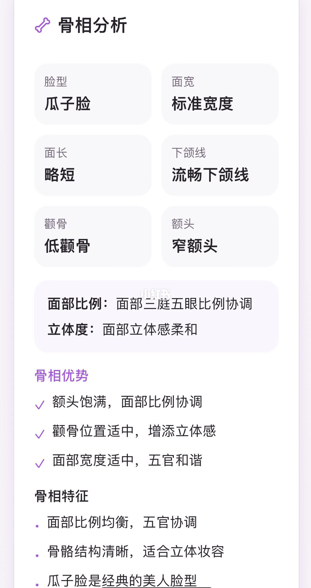
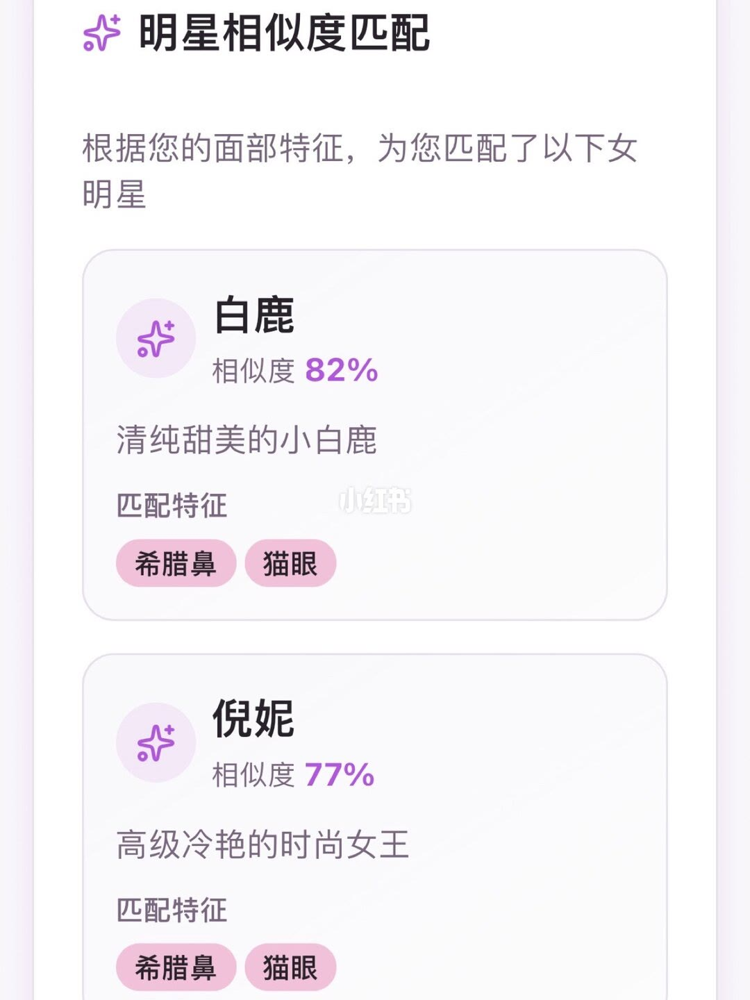

图文实录 · 小红书 · 摆渡者
有些长相一看就很难让人喜欢
标题说有些脸第一眼就难让人喜欢。说明里的回答是：人还没说话，你就觉得不好惹；不是人家坏，是长相吃了亏，并担心自己第一眼被贴标签。八张图里，只有第 1 页把脸分成亲和、凌厉、NPC 三栏。第 2 到 8 页是一份测颜报告，总分写成 88/100、风格写成少女元气型，没有展示「很难喜欢」的例子。这些都是笔记观点，不是科学定论。
1/8
三张三维脸：亲和、凌厉、NPC

上栏大字「亲和」。左侧写：轮廓柔和，脸型流畅，眼距较宽，嘴唇微微上扬。右侧写：面部留白多，眉骨不突出，鼻头圆钝，山根较低，五官较小。
中栏大字「凌厉」，脸中间有小红书水印。左侧写：轮廓锋利，下颌骨突出，眼距窄，嘴唇微微上扬。右侧写：面部留白多，眉骨不突出，鼻头圆钝，山根较低，瞳孔小。
下栏大字「NPC」。左侧写：法令纹明显，下颌骨突出，眼神空洞，下唇外翻。右侧写：眼袋重，无骨头支撑，木偶纹明显，山根低，面颊凹陷。
这一页没有写「很难让人喜欢」或「不好惹」。亲和和凌厉共用嘴唇微微上扬、面部留白多、眉骨不突出、鼻头圆钝、山根较低。分开两栏的，是轮廓柔和或锋利、眼距宽或窄、五官较小或瞳孔小，以及凌厉多了下颌骨突出。NPC 这一栏没有和上两栏共用这些鼻、眉、留白条目。
2/8
美学评分 88，风格写成少女元气型

上卡标题「美学评分」，大字「88/100」。下面写：您的美是独一无二的，散发着独特的魅力。
下卡标题「颜值风格定位」。标签是「少女元气型」和「活力少女」。说明写：五官灵动可爱，气质青春活泼，充满朝气。气质特点三枚：活泼、可爱、元气。适合场景三枚：正式场合、职场商务、派对活动。相似明星三枚：周冬雨、关晓彤、欧阳娜娜。卡片中部有小红书水印。
这一页没有人脸照片，没有写出 88 分怎么加出来，也没有和上一页的亲和、凌厉、NPC 对上号。
3/8
中国审美 89，日韩审美 84
标题「国际化审美标准对比」。副题写：您的面部特征在不同地区审美标准中的表现。
中国审美 89/100。说明写：注重五官精致、肤色白皙、气质温婉。优势特征：气质温婉优雅，肤色符合东方审美。符合特点：瓜子脸，樱桃小口，柔和气质。
日韩审美 84/100。说明写：偏爱清纯可爱、少女感强、五官柔和。优势特征：清纯可爱的气质，少女感强。符合特点：可爱，圆脸，少女感。
同一份报告里，脸型一边写成瓜子脸，一边写成圆脸。页上没有说明两套标准为什么可以同时成立，也没有测量脸宽或脸长。
4/8
眼睛和鼻子：标签与建议

标题「五官详细分析」。眼睛一节的标签是猫眼、大眼、窄眼距。总句写：眼睛是心灵的窗户，您的眼睛形态优美，眼神清澈明亮。优势特点三条：双眼皮自然，增添灵动感；眼角上扬，显得精神饱满；眼神清澈，给人真诚感。美化建议两条：使用睫毛膏增强眼部立体感；适当使用眼线强调眼型。
鼻子一节的标签是希腊鼻、低鼻梁、标准鼻翼。总句写：鼻子位于面部中央，对整体美感影响重大。优势特点三条：鼻梁挺直，增强面部立体感；鼻尖圆润，显得柔和；鼻翼大小适中，自然美观。美化建议一条：注意鼻部清洁，保持毛孔清爽。
同一节里，标签写低鼻梁，优势又写鼻梁挺直。窄眼距和第 1 页凌厉栏的「眼距窄」用词接近，这一页却把窄眼距放在赞美句里。页上没有写这两种说法哪一条优先。
5/8
皮相：七项肤况和两条注意
标题「皮相分析」。七格写：肤质类型混合性肌，肤色白皙肤色，色调冷色调，质地略有纹理，毛孔细腻毛孔，弹性弹性良好，水分水分适中。卡片中部有小红书水印。
皮肤优势三条：肤色健康，气色红润；肤色均匀，没有明显色斑；毛孔细腻，肌肤平滑。注意事项两条：定期去角质，保持肌肤光滑；注意清洁，预防毛孔堵塞。
最底部能看见标题「护肤建议」，下面的正文被裁掉了，具体建议无法确认。质地写「略有纹理」，优势又写「肌肤平滑」，页上没有解释这两句怎么并存。
6/8
骨相：格子和评语对不上

标题「骨相分析」。六格写：脸型瓜子脸，面宽标准宽度，面长略短，下颌线流畅下颌线，颧骨低颧骨，额头窄额头。
下面两行：面部比例，面部三庭五眼比例协调；立体度，面部立体感柔和。没有写出三庭或五眼的具体比例。
骨相优势三条：额头饱满，面部比例协调；颧骨位置适中，增添立体感；面部宽度适中，五官和谐。骨相特征三条：面部比例均衡，五官协调；骨骼结构清晰，适合立体妆容；瓜子脸是经典的美人脸型。
格子里的「窄额头」和优势里的「额头饱满」不是同一句。格子里的「低颧骨」和优势里的「颧骨位置适中」也不是同一句。页上没有说明以哪一行为准。
7/8
发色、刘海，和要避开的颜色
上卡「发型建议」三条：建议发色选择深棕色或栗棕色；刘海可以修饰额头，柔和面部线条；短发可选择齐肩波波头。
下卡「色彩搭配建议」。适合的颜色：酒红色、深紫色、玫瑰金、勃艮第红、黑色。避免的颜色：浅色系、粉嫩色、清淡色。
这一页没有说明这些颜色对应第 5 页的冷色调，也没有对照图。和第 1 页的三维脸、第 2 页的风格标签都没有连线。
8/8
白鹿 82%，倪妮 77%

标题「明星相似度匹配」。说明写：根据您的面部特征，为您匹配了以下女明星。
第一张卡：白鹿，相似度 82%，一句「清纯甜美的小白鹿」。匹配特征：希腊鼻、猫眼。卡上有小红书水印。
第二张卡：倪妮，相似度 77%，一句「高级冷艳的时尚女王」。匹配特征同样是希腊鼻、猫眼。
两张卡的匹配特征完全一样，评语却一个写清纯甜美，一个写高级冷艳。第 2 页的相似明星是周冬雨、关晓彤、欧阳娜娜，这一页没有他们。相似度怎么算的，页上没有写。
汇总
标题在说明里，图上是分类加测颜
结论：说明把「第一眼不好惹」解释成长相吃亏，不是人坏。图上能单独站住的，是第 1 页的三栏观感：亲和偏柔、眼距较宽、五官较小；凌厉偏锋利、下颌突出、眼距窄、瞳孔小；NPC 写纹路、眼袋、凹陷和眼神空洞。第 2 到 8 页把同一份报告写成高分、少女元气、瓜子脸或圆脸、猫眼窄眼距、希腊鼻，并给出妆发和颜色建议。报告内部多处互相打架，不能收成「难喜欢的脸长这样」。
支撑页：第 1 页是三栏对照。第 2 页给出 88/100 和少女元气型。第 3 页把中国审美 89 和日韩审美 84 并列，脸型却写成瓜子脸对圆脸。第 4 页窄眼距被写成优点，又把低鼻梁和鼻梁挺直放在同一节。第 6 页窄额头对额头饱满、低颧骨对颧骨适中。第 8 页用同一组希腊鼻、猫眼，配出清纯甜美和高级冷艳两句评语。
边界：这是笔记的观感分类和测颜文案，不是面相学结论，也不能用来判断性格、人品或好不好相处。第 1 页没有出现标题那句「很难让人喜欢」。第 5 页「护肤建议」只有标题，正文无法确认。分数、相似度和明星名字都没有算法或对照照片。第 7 页的发色和避色是建议清单，不是对某张脸的前后效果。